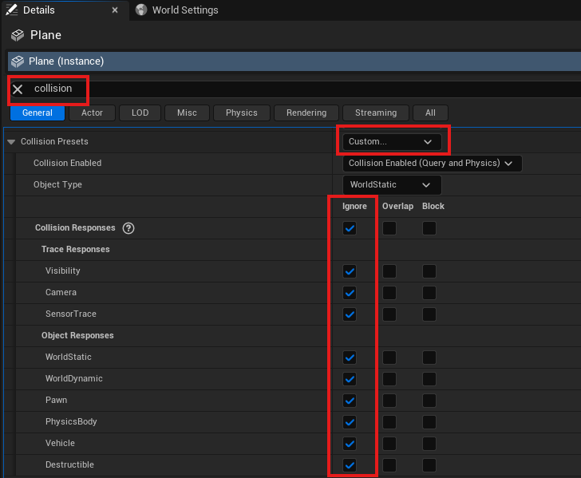

Creating a Custom Level
For a custom level in HoloOcean, you must make a level using Unreal Engine. See the Unreal Engine documentation for more information on saving and creating a new level.
There are 2 main aspects to our HoloOcean levels: the landscape, and the water.
Landscape
For help creating your own landscape, please reference Unreal Engine’s landscape documentation. The documentation explains how to use the Landscape Mode within the editor, as well as how to apply and create materials for your landscape.
Note
As you create a landscape, please note that the water level is at z=0. The landscape must be below z=0 in order for our underwater agents to work as expected.
To aquire materials or assets for your landscape, you can purchase materials or find some free ones at Fab. Quixel offers many free assets and materials.
If you wish to enclose the sides of your environment, you can either place assets like walls or sculpt the edges of the landscape to be taller. Both examples can be seen in the SimpleUnderwater environment.
Water
The Unreal Engine Water plugin is not compatible with HoloOcean and will not work. Instead, to achieve an underwater appearance, you will need to place a water plane and two PostProcessVolumes within your environment. Please note the following are suggested settings, and there may be others you would want to consider adjusting for your level.
Water Plane
For the water plane, place a plane actor at z=0. Change the material to be any water-like material. You will also need to change the collision settings so that vehicles can pass through the plane. In the Details panel, search for “collision” and set custom collision presets to ignore all options.
To make sure your water plane is compatible with our tide system, tag the water plane as “WaterSurface” and make the plane movable.
Water Color (PostProcessVolume 1)
For the PostProcessVolume, go to Place Actors ➡ Volumes ➡ Post Process Volume and drag it into your level. Adjust the scale of the volume to fit your entire underwater area. To adjust the color of the volume, go to the Details pannel ➡ Color Grading ➡ Misc ➡ “Scene Color Tint”. Blue to green colors are best, and the Dam environment has the “Scene Color Tint” set to Hex sRGB AAD9C8FF.
As seen in the Dam environment, the water plane is a separate plane located at z=0. The red outline box that surrounds the environment is the PostProcessVolume.

Make sure to tag the PostProcessVolume as WaterPPV so that the Water Fog Command and Tides Command function correctly.
Water Fog (PostProcessVolume 2)
To simulate underwater fog and reduce visibility, add a second PostProcessVolume that is the same size as the first one (you can simply duplicate the existing volume) and assign it the MM_Fog_Water material.
In the Details panel, navigate to Rendering Features ➡ Post Process Materials, add an element to the array, set it to Asset Reference, and select MM_Fog_Water.
Alternatively, you can drag the material directly from Content/WeatherContent/Fog/MM_Fog_Water.
After applying the material, you can tune its parameters to achieve the desired underwater effect. The most relevant parameters are:
Fog_Depth – controls how far the fog extends.
Fog_Opacity – controls the density of the fog.
Fog_Color – defines the fog color (normalized RGB,
0.0 – 1.0).
Although the Fog_Transition parameter can also be modified, it is generally recommended to leave it at its default value of 0.1 and adjust the other parameters first. Modify it only if you need finer control over how the fog blends with the scene.
Make sure to tag the PostProcessVolume as WaterPPV so that the Water Fog Command and Tides Command function correctly.
Lighting
If you created a Basic Level, the lighting should already be implemented automatically. Otherwise, go to Window ➡ Env. Light Mixer. From there, make sure to create all of the lighting options it gives you.
As a quick check, make sure your level has the following: DirectionalLight, ExponentialHeightFog, SkyAtmosphere, SkyLight, and VolumetricCloud.
To make sure the Exponential Height Fog will work with our Day Cycle settings, set the “Fog Inscattering Color” and “Directional Inscattering Color” to black. The “Fog Density” and “Fog Height Falloff” can be adjusted until it fits your needs.
Adding Objects
Obtaining Assets
To populate your level with assets, you will either need to import your own assets or find assets on Fab.
To replicate similar levels as HoloOcean, we use the following asset packs:
Importing Assets
If you have purchased or obtained free assets from Fab, you can view them in the Epic Games Launcher under the Unreal Engine Library tab. Under the “Fab Library” section, you can click on “Add To Project” and select your project to add the assets.
If you are importing your own models, it is best to save them as FBX files. From there, you can click on the “Import” button from within the Unreal Engine editor and select your FBX file. Please reference Unreal Engine’s Documentation for further help with importing assets.
Placing Assets
From the Content Drawer, you can drag and drop your assets into your custom level. Or, you can select the icon of the cube with the green plus symbol to quickly add actors such as basic shapes to your level.
It is simple to move, rotate, and scale objects within your level. You can either directly edit these values within the Details panel or use keyboard shortcuts.
Key |
Action |
|---|---|
W |
Selects the Move tool |
E |
Selects the Rotate tool |
R |
Selects the Scale tool |
For more information please reference Unreal Engine’s Documentation.
Note on Collision Settings for Objects and Sonar
Sonar simulation relies upon the collision mesh for objects when generating the octree.
First, make sure to set the environment boundaries to have the environment min and max. In standalone through Unreal Engine, this would be done by setting the Additional Launch Parameters as seen here: Launching Game Live. If you have packaged your worlds, this would be set in the config file.
Warning
Octrees must be regenerated for a level whenever an object is changed or moved. To regenerate the octrees, delete the octree folder and rerun your simulation. Please see Octree Generation for the octree location.
If the collision mesh of an object is coarser than the visual mesh then the representation of that object in a sonar image will be inaccurate. This issue can be addressed for the objects by using the Unreal Engine editor and setting the “Collision Complexity” option in the details section of the static mesh editor to “use complex collision as simple”.

If you still have issues with your collision mesh, it is often helpful to enable “Double Sided Geometry” in the details panel of the static mesh editor.
Finally, within the level, click on the object and go to the details panel. Go to the collision section and enable “Simulation Generates Hit Events”.
You can verify the shape of the collision mesh by changing the view mode to “Player Collision” in the level or in the static mesh editor.
Additional Tide Settings for Objects
In order to create compatible non-agent floatables that with move with the tide you must add the keyword Float in the actor tags and then go into the collision settings of the static mesh and make sure that customized collisions is checked.
Weather
To add the weather feature to your custom level, you will first need to add the Weather Manager blueprint to your world. To do this, go to Content Browser ➡ Weather Content and drag BP_Weather_Manager into your level.
Next, you need to add two different Volumetric Cloud actors. Go to Place Actors ➡ Visual Effects ➡ Volumetric Cloud and drag it into your level twice.
After both actors are placed, assign a cloud material and tag each one:
Select the first Volumetric Cloud actor.
In the Details panel, under Cloud Material ➡ Material, assign the material m_SimpleVolumetricCloud_Inst_Sunny, found in the Weather Content folder. You can also drag the material directly from the folder into the material field.
Tag the actor by going to Actor ➡ Advanced ➡ Tags, click + to add an element, and name the tag Sunny.
Repeat the same process for the second Volumetric Cloud actor, but this time use the m_SimpleVolumetricCloud_Inst_Cloudy material and tag it as Cloudy.
Finally, you should also tag the water plane you created as “WaterSurface”.
Air Fog
For above-water simulations where you want to introduce air fog or mist, you can add a PostProcessVolume that covers the desired region and assign it the MM_Fog_Air material.
In the Details panel, navigate to Rendering Features ➡ Post Process Materials, add an element to the array, set it to Asset Reference, and select MM_Fog_Air.
Alternatively, you can drag the material directly from Content/WeatherContent/Fog/MM_Fog_Air.
Once applied, you can adjust the material parameters to achieve the desired atmospheric effect. The most relevant parameters are:
Fog_Depth – controls how far the fog extends.
Fog_Opacity – controls the density of the fog.
Fog_Color – defines the fog color (normalized RGB,
0.0 – 1.0).
Although the Fog_Transition parameter can also be modified, it is generally recommended to leave it at its default value of 0.1 and adjust the other parameters first. Modify it only if you need finer control over how the fog blends with the scene.
Make sure to tag the PostProcessVolume as AirPPV so that the Air Fog Command and Tides Command function correctly.
Note on Flashlights
For vehicle flashlights to function properly, your level must include the FlashlightManager.
You can add it by dragging the manager from Content/HolodeckContent/Agents/FlashlightManager into your world.
The FlashlightManager does not alter the appearance or physics of the environment — it simply enables flashlight functionality.
Testing Your Custom Level
For quick testing of your level, it is often easiest to run in standalone mode. This will allow you to quickly verify collision settings or visuals without having to package the level. Please reference Launching Game Live to run your level from within the Unreal Engine Editor.
Otherwise, you will have to package your level after each change. Please reference Packaging Environments for information.